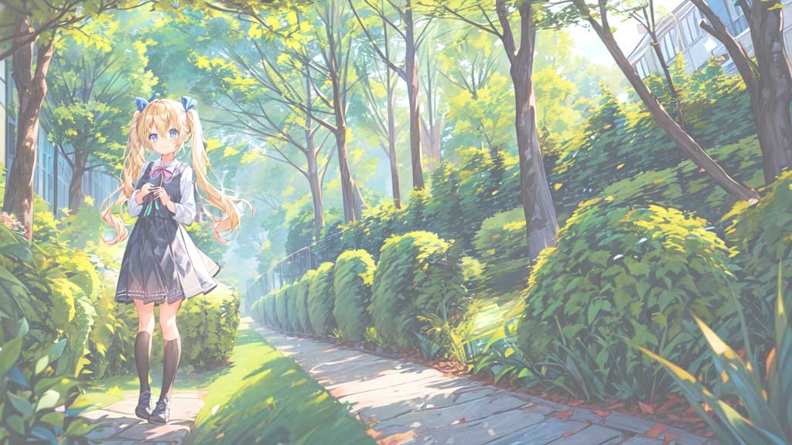
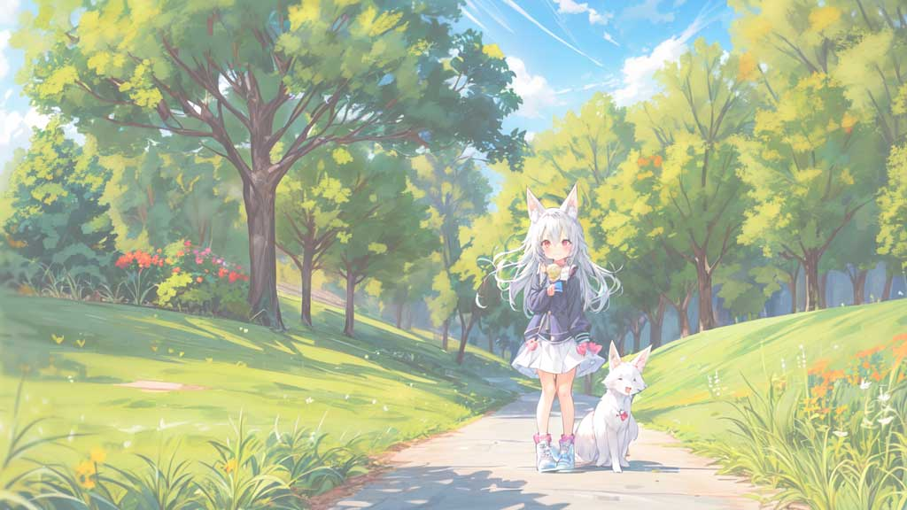
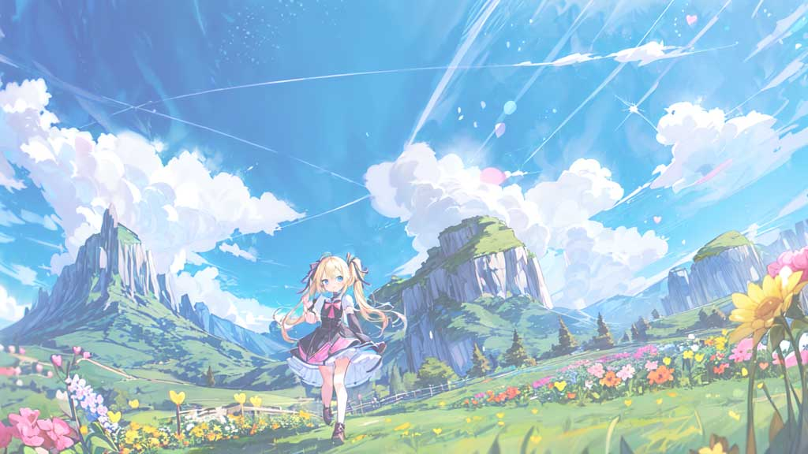
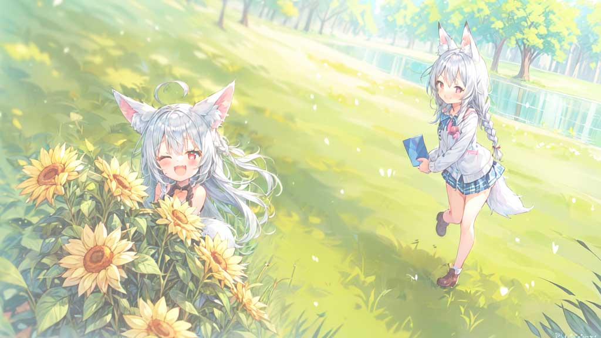
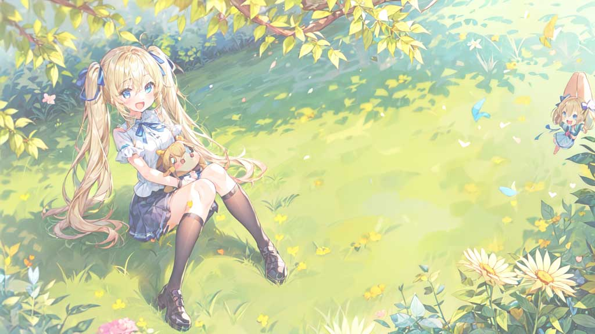

清明（せいめい）の訪れ：春の美しさを深める節気
春の盛りを告げる「清明」の読み方「せいめい」です。この清明は、自然が再び生命を吹き込まれる魔法のような時期です。この節気は、春の暖かさを深め、新たな生命の始まりを象徴します。清明の期間は、自然界における変化だけでなく、私たちの生活にも新しい息吹をもたらします。
2024年の清明の期間は、4月4日から4月18日までです。
本記事では、清明の意義とその歴史的背景、春の豊かな風習や旬の食べ物について探ります。読者の皆様に春の魅力をお届けし、清明を通じて感じられる自然の美しさを共有したいと思います。
清明（せいめい）の意味と歴史：春の息吹を伝える節気
「清明」という言葉は、文字通り「明らかで清らか」を意味し、春の透明で爽やかな空気を表しています。この節気は、昼と夜の長さがほぼ等しくなる時期に位置し、自然界のバランスと調和を象徴します。
歴史的に見ると、清明は古代中国から伝わる節気で、春の農作業の始まりを知らせる重要な時期とされていました。日本においても、清明は春の訪れを感じさせる節気として受け入れられ、多くの春の行事や風習に影響を与えてきました。
花見や春の訪れを祝う行事など、清明は古来より人々の生活と密接に結びついています。このセクションでは、清明が持つ文化的、歴史的背景について、その奥深い意味を探ります。
清明（せいめい）の行事：春の祝祭としての風習
清明は、春の訪れを祝う多様な伝統行事に満ちた時期です。この節気には、自然と共生する文化が色濃く反映されます。
特に、清明の頃に行われる「花見」は、日本の春の代表的な行事の一つです。桜の花が満開になるこの時期、人々は公園や川沿いに集まり、春の美しさを満喫します。
また、古くから清明には先祖を偲ぶ行事も行われてきました。お墓参りや、家族や親戚が集まって故人を偲ぶ風習は、春分の日と合わせて行われることが多いです。
これらの風習は、自然のサイクルと共に生きる私たちの姿勢を象徴しており、清明の時期には春の息吹を感じながら、祖先への感謝の気持ちを新たにする機会となります。
清明（せいめい）の味覚：春の食材とレシピ
清明の時期は、春の旬の食材が豊富になり、食卓が彩り豊かになります。特に、タケノコや春キャベツなどの新鮮な野菜は、清明の食材として人気です。
タケノコは、柔らかい食感と独特の風味が春を感じさせる食材で、炊き込みご飯や煮物に最適です。春キャベツは、その柔らかさと甘みが特徴で、サラダやスープに使うと春の味わいを楽しめます。
また、この時期には菜の花も旬を迎え、ほろ苦さが特徴的な菜の花は、おひたしやパスタにすると春の訪れを感じることができます。レシピによっては、これらの食材を組み合わせて、春らしい彩りと味わいの料理を作ることもできます。
清明に合わせて、旬の食材を活用した健康的で美味しい料理を家族や友人と共に楽しむことは、春の訪れを祝う素晴らしい方法の一つです。
清明（せいめい）と春の自然：花々と生命の目覚め
清明の時期は、自然界に春の息吹が満ちあふれる瞬間です。この季節は、桜をはじめとする様々な花々が満開になり、色鮮やかな景色を作り出します。
公園や庭では、梅の花や菜の花が春の訪れを告げ、新緑が眩しい季節へと移行していきます。また、野鳥の鳴き声や昆虫の活動も活発になり、自然の中で生命の営みが見られるようになります。
清明には、散策や自然観察を楽しむ絶好の機会があり、自然の美しさに触れながら心身ともにリフレッシュすることができます。
春の暖かな日差しの中で、自然との繋がりを感じ、季節の変わり目を楽しむことは、清明の醍醐味の一つです。
清明（せいめい）と健康：春の訪れと体の調和
清明の季節は、春の訪れと共に体調管理に注意が必要な時期でもあります。春は、冬の寒さから解放され、暖かくなる一方で、花粉症などのアレルギー反応を引き起こしやすい環境にもなります。
この時期は、アレルギー対策としてマスクの着用や室内の空気清浄を心がけることが大切です。
また、春の変わりやすい気候に対応するため、温度調節がしやすい服装を選ぶことも重要です。
春の盛りに向けて、季節の食材を取り入れた栄養バランスの良い食事を心がけることも、春の健康管理には効果的です。特に、ビタミンやミネラルが豊富な春野菜を積極的に摂ることで、体の調子を整えることができます。
清明の時期は、自然との調和を図りながら、体調を整え、春の訪れを健やかに迎える準備をする大切な時です。
清明（せいめい）の庭づくり：春の花々を彩る
清明の季節は、庭づくりに最適な時期です。春の暖かな日差しとともに、花壇や庭に色鮮やかな花々を植えることで、春の訪れを美しく演出できます。
この時期にはチューリップやパンジー、ビオラなどの春の花がおすすめです。
また、春に向けての土作りも重要です。土壌を耕し、必要な肥料を施すことで、花々がより健康に成長します。庭の配置を考える際には、花の色や形、成長の早さなどを考慮し、視覚的なバランスを取ることが大切です。
清明の時期に庭づくりを行うことで、春の訪れとともに、自宅の庭が生き生きとした空間に変わることでしょう。春の庭づくりは、自然との繋がりを深め、季節の移ろいを感じることができる楽しい活動です。
現代に息づく清明（せいめい）：伝統の中の新しい発見
清明は、現代にもその価値を持続しています。伝統的な行事や風習を通じて、先人たちが大切にしてきた自然との調和や生命への敬意を再認識する機会を提供します。
現代社会では、忙しい日常から一時的に離れ、清明の時期に自然を感じることは、心のリフレッシュにもなります。また、伝統行事や食文化を通じて、家族や地域コミュニティとの絆を深めることができます。
清明を迎えることで、季節の変化に敏感になり、自然界の微妙な変動を感じ取ることが可能になります。現代において清明を祝うことは、単に伝統を継承するだけでなく、現代生活の中で新たな価値を見出し、自然と共生する意識を育むことにも繋がります。
まとめ：清明（せいめい）の奥深き魅力：春の輝きを感じて
この記事を通じて、清明が持つ豊かな意味合いを探求しました。清明は春の美しさを象徴する節気であり、自然の目覚めとともに私たちに新たな活力を与えます。
伝統的な行事や食文化、庭づくりや健康管理などを通じて、春の到来を感じ、自然との絆を深める機会を提供します。清明を祝うことで、私たちは自然界の微妙な変化をより深く理解し、日々の生活に新たな意味を見出すことができます。
清明期間中に行われる様々な活動は、春の輝きを最大限に感じるための素晴らしい方法です。季節の移ろいを祝い、春の暖かさを心に刻むことで、私たちは生命の豊かさを実感することができるでしょう。